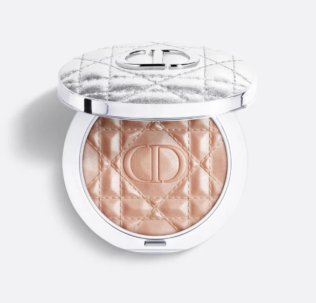

Illuminante Glow Touch
€15,90
Effetto luminoso e naturale.
Descrizione
Illuminante Glow Touch dona luminosità ai punti strategici del viso, come zigomi, arcata sopracciliare e punta del naso, creando un effetto glow naturale e sofisticato.
La texture sottile e setosa si fonde perfettamente con la pelle senza evidenziare imperfezioni. Può essere applicato delicatamente per un effetto luminoso discreto oppure intensificato per un look più brillante e d’impatto.